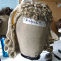
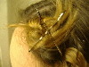

Tutorials and Articles

Basic Wig Styling Getting the wig to look the way you want before you put it on your head.

Pincurls Tutorial Use pincurls to keep your hair under your wig and your wig firmly attached to your head.
Resources
Imaginary Styles This site has lots of cool Sci-Fi hairdos for you or for your wig.
Dreamweaver Braiding Cool Renaissance style braids with photos and instructions. Great for Renaissance costumes.
Sally Beauty Supply They sell styrofoam heads, hairnets, and lots of other good stuff. They have physical stores all over the U.S. too.